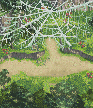
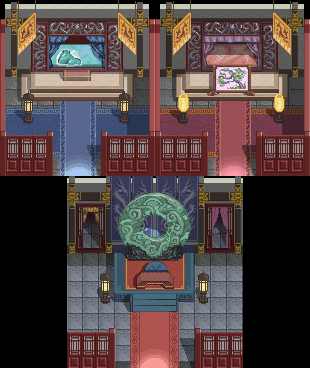

「平牧城」 ※剧情流程攻略※ 芷嫣忽然发出一声尖叫“啊！！！”  定睛一看，原来前方大树上有一张非常大的蜘蛛网，芷嫣因为非常害怕蜘蛛，才吓得惊叫出来，廷云趁机取笑芷嫣，两人又开始拌嘴了…… 吵吵闹闹间好像从蜘蛛网中传来微弱的呼救声，再仔细一看，原来在大蜘蛛网中间有一个被蜘蛛丝包裹起来的人形。廷云和芷嫣把那团东西取下来剥开一看，原来中间被包裹的居然就是医生沛陀。细问之下才知道沛陀医生被一个大蜘蛛抓住，廷云他们与花妖打斗的声音吓跑了大蜘蛛，沛陀医生才得以解救。 在确定药草没有遗失后，几个人就一同回平牧城去了。  平牧城 官邸回到平牧城后，沛陀医生就赶紧去医治平牧城主司徒安。城主在吃完沛陀医生带回来的药草后，精神稍微有了些许好转。 之后廷云与城主交谈并将师傅的信交给城主。城主知道两人是要前往火凌氏部落，便劝两人在平牧城待些日子，两人问及缘由，城主告知两人，要去火凌氏部落就必须要经过伏牛山以及九侯城，但是目前伏牛山有一群山贼盘踞，并将平牧城的水源阻断，造成城内百姓无水可用。廷云和芷嫣听闻此事，自然勇于承担，要前往伏牛山剿灭山贼，并扫清前路上的障碍。两人决定晚上展开行动，这时城主告诉两人，九侯城主的女儿玉芙正好在平牧城作客，介绍两人去与她聊聊，以便协助通过九侯城。 离晚上还有一段时间，两人决定先去拜访玉芙，就和城主先行告辞了。 在隔壁厢房，两人见到了九侯城主的女儿玉芙。一番寒暄之后，玉芙告诉廷云和芷嫣，进入火凌氏部落必须要有“九侯城关令”才行，但是因为伏牛山被山贼占据，玉芙暂时也回不了九侯城。廷云和芷嫣告诉玉芙他们两人准备晚上前往伏牛山铲除山贼的计划，玉芙给了两人800两银子，并告诉两人关于伏牛山的线索可以向治安官询问。 告辞了玉芙后，两人去找治安官询问有关伏牛山山贼的事情，治安官答应带领两人前往伏牛山，因为离日落还有一段时间，治安官让两人先去城里补充补给品，并且治安官面露难色，说他还有些事情需要处理。廷云和芷嫣见治安官脸色不好，就询问他发生了什么事情，看看自己能不能帮忙。这只一位士兵来报告，说下水道闹怪物闹的很凶，居民请士兵前往协助。治安官告诉两人，士兵们都因为讨伐伏牛山而受伤，所以没有多余的兵力去调查下水道的事情，廷云和芷嫣就主动承担起了责任，前往调查下水道事件。 出了官邸，可以在马车边，桥的左河岸柳树下找到玛瑙戒指。来到张大婶家，张大婶拜托两人从下水道帮忙抢回至少20袋面粉，两人答应帮忙，就进入下水道了，在下水道的最尽头，可以找到体健项圈。在张大婶家的下水道里找到20袋以上面粉交给张大婶，张大婶为了感谢两人，给了他们2个张家肉包。 出了张大婶家，两人往东走，又进入了一户人家，这家的主人傅伟拜托两人在下水道里找20页的甲骨文件。进入下水道，在尽头可以找到600两，找齐20页甲骨文件后交给傅伟，会得到大力散3个。 出了傅伟家，看到左侧有几个人在一起，走过去一听，原来是在谈论什么“殊仙教”，继续与城里的其他人闲聊会知道更多“殊仙教”的事情，但现在还不是理他们的时候，继续解决下水道事件。 往右下走，到方老爷家，他请廷云和芷嫣帮忙去下水道拿25张青蛙皮，同样的在下水道的尽头知道到道具狼皮猎装，收集到25张青蛙皮以后，方老爷会给你3个青蛙汤，与方老爷告辞后，来到位于右上方的李嘉家，他告诉你需要到下水道从怨灵身上找到15张檀香料，在下水道尽头找到桧木护符，集齐15张檀香料后和李嘉换取3个飞毛散，下水道事件就此结束。此处需要注意的是在4个下水道中有一定概率碰到鼠王，打倒鼠王会得到+15敏捷的鼠辈项链。 在李嘉家上方的广场上，会见到一个小孩叫小虎子（仙剑！），他拜托廷云和芷嫣帮忙去伏牛山找寻他的爹爹――老朱，一个头戴朱色头巾得人，廷云和芷嫣答应帮忙他寻找老朱。在小虎子旁边有一个旅行商人刘平，和他谈谈他会告诉你他正在收集檀香料，给他50个檀香料后可以换到命中率+10的银雕手镯。（此处需要注意的是，一定要先完成李嘉的任务，否则在给李嘉交任务时，会把身上所有的檀香料都交给他。） 回到城主的官邸，向治安官报告解决下水道问题的情况时，一个受伤的士兵来报告被护民团的王大标打伤，廷云和芷嫣问治安官为何护民团会打伤官兵，治安官告诉他们护民团其实是以王大标为首的一群流氓份子，他们到处向百姓索要保护费，听到此处芷嫣气愤的跑出去找王大标他们算账，廷云问清楚护民团所在的地点是在桥旁边的下水道里后，廷云也追着芷嫣跑了出来。 在城市的右边牌楼附近会看到一个叫许荣的收藏家，他告诉廷云和芷嫣在下水道里有四只千年老龟，据说这四只千年老龟已经幻化成人，许荣想要收藏千年老龟身上的龟壳，便请廷云和芷嫣去帮忙搜集，答应了许荣后，两人整顿了一番装备，就向下水道出发了。在下水道里会随机碰到千年老龟，将他们打败收集4个龟壳就行了。 在下水道的内部会碰到张大婶和他的儿子张儒，张儒已经被殊仙教洗脑了，对自己的娘大喊大叫，廷云和芷嫣看不过去，打算帮张大婶教育她的儿子。再往里走，碰到张儒，选择单挑他将他打败，他往里逃去廷云和芷嫣跟着他也往里走去，张儒跑到王大标跟前告状，王大标嫌张儒没用，准备杀了他，这引起了廷云和芷嫣的震怒，两言不和就打了起来。打败王大标，廷云和芷嫣两人将王大标带往治安官那里，治安官谢过两人后，准备带两人前往伏牛山去，出发前给两人留时间出去补给。这时候可以去交许荣的任务会得到回天刈，然后去打王大标的那里可以拿到清云羽衣，去张大婶那里她为了感谢廷云和芷嫣的帮忙会给他们5个包子，张儒也会给你虎皮猎裙（只有单挑才会拿到）。 补给完毕，去找治安官，一起去往伏牛山。 伏牛山危机重重，山贼人多势众…… 山贼的老大似乎与某组织有关…… 下回两人将发现伏牛山中不可告人的阴谋……（第二章第一回结束） ※隐藏物品及隐藏剧情※ 1.出了城主官邸，桥的左河岸柳树下有有“玛瑙戒指”［会心一击率+8］ ※迷宫地图※ |